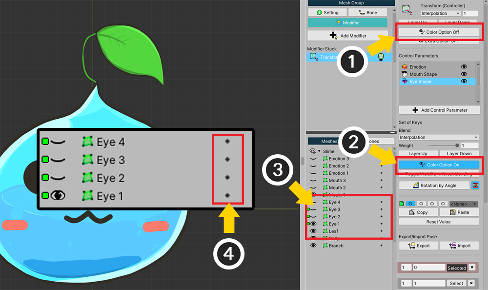

AnyPortrait > 시작하기 > 1.6. Transform 모디파이어로 표정 바꾸기
1.6. Transform 모디파이어로 표정 바꾸기
1.4.2
메시 그룹(Mesh Group)의 모디파이어(Modifier)를 추가하는 것이 AnyPortrait의 제일 중요한 과정입니다.
모디파이어의 작동 원리는 복잡하므로 여기서는 추가하고 사용하는 법만 다루게 됩니다.
관련 페이지에서 모디파이어의 종류, 특성 및 주의할 점에 대해서 확인하시길 바랍니다.
이 페이지에서는 여러 모디파이어 중에서 "Transform (Controller)" 모디파이어를 이용합니다.
"Transform" 모디파이어를 이용하면 컨트롤 파라미터에 맞게 위치나 크기 등을 바꾸거나 색상, 출력 여부를 바꿀 수 있습니다.
따라서 이미지들을 교체하여 표정을 바꾸는 효과를 주기에 적합합니다.
가장 기본이 되는 모디파이어로서 어렵지 않게 사용하실 수 있습니다.
(참고로 "Morph" 모디파이어에서도 색상을 제어할 수 있습니다.)

이전 페이지에서 만든 (1) Slime 메시 그룹을 선택합니다.
(2) Modifier 메뉴를 선택하면 현재 모디파이어가 하나도 등록되지 않은 상태임을 확인할 수 있습니다.
(3) Add Modifier 버튼을 눌러서 모디파이어를 추가하는 다이얼로그를 호출합니다.
여러 종류의 모디파이어들 중에서 (4) "Transform (Controller)" 모디파이어를 선택하고 (5) Select 버튼을 누릅니다.
AnyPortrait v1.3.3에 추가된 "Color Only (Controller)" 모디파이어를 이용하는 것도 좋습니다.
자세한 내용은 관련 페이지에서 확인할 수 있습니다.
모디파이어를 추가하면 볼 수 있는 화면입니다.
(모디파이어에 따라 조금씩 다릅니다.)
1. Modifier Stack : 모디파이어는 순차적으로 계산됩니다. (아래의 모디파이어가 가장 먼저 계산됩니다.)
2. 모디파이어 On/Off : 작업 도중에 모디파이어를 잠시 비활성화할 수 있습니다. 전구 아이콘을 클릭하면 On/Off가 됩니다.
3. 선택한 모디파이어 : 현재 선택한 모디파이어의 이름과 아이콘, 레이어 위치입니다.
4. Color Option On/Off : Transform/Morph 모디파이어는 색상값을 제어할 수 있습니다. 이 버튼으로 색상값을 제어할지 여부를 결정합니다.
5. Modifier Blend : 다른 모디파이어의 값과 어떻게 합칠지를 결정합니다.
- Method : 값을 병합하는 방식입니다. 덮어쓰기 보간 방식(Interpolation)와 더하기 방식(Additive)이 있습니다.
- Weight : 값을 병합할 때의 가중치 입니다. 0~1의 값을 가집니다.
- Layer Up/Down : 모디파이어 계산 순서를 바꿉니다.
6. Control Parameters : 입력값으로서 등록된 컨트롤 파라미터를 출력합니다.
7. Remove Modifier : 선택한 모디파이어를 삭제합니다.
모디파이어는 "입력 키"과 "변형되는 값"의 조합으로 구성됩니다.
이때, 현재 샘플에서의 "입력 키"에 해당하는 것은 컨트롤 파라미터이며, "변형되는 값"은 "메시의 색상/출력 여부"입니다.
따라서 다음 작업은 "입력값이 될 컨트롤 파라미터"와 "모디파이어가 적용될 메시"를 선택한 뒤 같이 등록해주는 것입니다.
자세한 설명은 관련 페이지에서 확인하실 수 있습니다.

(1) Controller 탭을 선택합니다.
(2) 눈 이미지의 메시(Eye1)를 하나 선택합니다.
Controller 탭이 선택된 상태에서 앞서 만들었던 눈 모양(Eye Shape) 파라미터를 확인합니다.
컨트롤 파라미터를 입력값으로 받는 모디파이어를 선택한 상태에서 붉은색 녹화 버튼이 나타난 것을 확인할 수 있습니다.
(3) 눈 모양(Eye Shape) 파라미터의 녹화 버튼을 눌러서 모디파이어에 등록을 해줍니다.
이렇게 되면 다음과 같이 화면이 바뀌게 됩니다.

컨트롤 파라미터의 배경이 붉은색으로 바뀌었으며, 우측 UI에는 새로운 설정들이 나타납니다.
이 상태가 "컨트롤 파라미터 + 메시"가 모디파이어에 등록된 것입니다.
이어서 다른 "눈 모양의 메시"들도 모디파이어에 등록을 하겠습니다.

(1) 이미 "Eye Shape" 컨트롤 파라미터가 등록된 상태이므로,
(2) 다른 눈 모양의 메시(Eye2)를 선택한 뒤,
(3) Add to Keys 버튼을 눌러서 등록을 합니다.
같은 방식으로 4개의 눈 모양 메시(Eye1, Eye2, Eye3, Eye4)를 모두 등록해줍니다.
4개의 메시를 모두 등록하였다면 위 화면처럼 녹색 아이콘이 나타나게 됩니다.
다음 작업은 실제로 컨트롤 파라미터의 각 값에 표정을 지정하는 것입니다.
눈 모양(Eye Shape) 파라미터의 값이 0일때는 Eye1 메시만 나타나도록 하고,
값이 1일때는 Eye2 메시만 나타나게 하는 방식입니다.
(1) 파라미터의 값을 1로 옮깁니다. 해당 위치에 키(Key)가 없기 때문에 붉은 녹화 버튼이 활성됩니다.
(2) 녹화 버튼을 눌러서 "파라미터 값 = 1"일 때의 키를 생성해줍니다.
마찬가지로 (3) 파라미터를 2로 옮긴 후에 (4) 녹화 버튼을 눌러서 키를 생성해줍니다.
(5), (6)도 마찬가지로 작업하여 키가 총 4개가 생성되도록 합니다.
사용하시는 AnyPortrait 버전이 v1.1.6 또는 그 이후의 버전이라면, 이 단계에서 Color Option을 활성화해야합니다.
메시의 색상, 투명도, 출력 여부를 제어하기 위해서는 모디파이어의 Color Option이 켜진 상태여야 하는데, v1.1.6부터는 최적화의 이유로 이 옵션의 기본값이 OFF로 변경되었습니다.

(1) 모디파이어의 "Color Option"을 켭니다.
(2) 등록된 컨트롤 파라미터의 "Color Option"이 꺼져있다면 버튼을 눌러서 켭니다.
(3) 이제 메시의 렌더링 여부를 변경할 수 있는 "노란색 눈 버튼"들이 나타납니다.
Color Option에 대한 정보는 관련 페이지에서 확인하세요.
AnyPortrait v1.4.2에서 Color Option이 비활성화된 경우에서의 편의성이 조금 향상되었습니다.

메시의 출력 여부를 설정하기 위해서는 (1) 모디파이어의 Color Option과 (2) 등록된 컨트롤 파라미터의 Color Option이 모두 켜져있어야 합니다.
만약 하나라도 비활성화된 상태에서는 (3) 출력 여부를 변경하기 위한 노란색 눈 버튼이 나타나지 않습니다.
(4) 그런데 v1.4.2부터는 이 경우에 작은 점들이 대신 등장합니다.
(1) 출력 여부를 모디파이어로 제어하고자 하는 메시의 오른쪽에 위치한 작은 점을 클릭하세요.
(2) Color Option를 켤지 여부를 묻는 메시지가 나타나는 것을 볼 수 있습니다.
Okay 버튼을 누릅니다.
(1) 모디파이어의 Color Option과 (2) 컨트롤 파라미터의 Color Option이 자동으로 활성화됩니다.
(3) 노란색 눈 버튼도 등장하는 것을 볼 수 있습니다.
컨트롤 파라미터의 4개의 키에 따라 각각 눈 메시의 Show/Hide를 결정합니다.
(1) 먼저 컨트롤 파라미터를 다시 첫번째 위치로 (키값 = 0) 옮긴 뒤,
(2) Eye1 메시의 노란색 눈 버튼만 켜고 나머지는 끄도록 합니다.

이어서 두번째 키에 대해서도 작업을 합니다.
(1) 컨트롤 파라미터를 두번째 위치로 (키값 = 1) 옮긴 뒤,
(2) Eye2 메시의 노란색 눈 버튼만 켜고 나머지는 끄도록 합니다.


나머지 키 2개도 같은 방식으로 작업하여 4개의 표정에 대한 설정을 완료합니다.

위와 같은 방식으로 입 모양(Mouth Shape)에 대해서도 작업을 합니다.
눈과 입의 표정을 모두 만들었다면 게임에서 바로 테스트를 할 수 있습니다.
Bake 기능을 실행하여 씬으로 옮긴 뒤 유니티 에디터 상에서 바로 테스트해볼 수 있습니다.